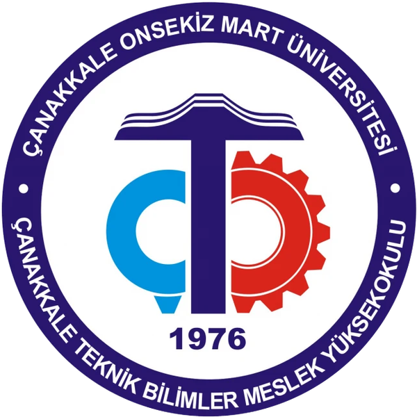

<!doctype html>
<html lang="tr">
<head>
  <meta charset="utf-8">
  <meta name="robots" content="noindex">
  <title>Katılım Belgesi · Genç Kızılay ÇOMÜ</title>
  <link rel="icon" href="data:,">
  <link rel="stylesheet" href="../ortak/css/fontlar.css">
  <style>
    /* Her belge A4 yatay (297×210 mm). Dört belge 2×2 dizilince A2 yatay (594×420 mm) tek bir tasarım olur. */
    :root {
      --murekkep: #22205A;
      --gri: #5C5A6E;
      --kizilay: #E11B22;
      --baslik: 'Fraunces', Georgia, serif;
      --govde: 'Plus Jakarta Sans', 'Segoe UI', sans-serif;
    }
    @page { size: 297mm 210mm; margin: 0; }
    * { box-sizing: border-box; margin: 0; padding: 0; }
    body { background: #8A8A8A; font-family: var(--govde); color: var(--murekkep); }
    .sayfa { width: 297mm; height: 210mm; position: relative; overflow: hidden; background: #FBF8F1; -webkit-print-color-adjust: exact; print-color-adjust: exact; }
    .sayfa + .sayfa { break-before: page; }
    @media print { body { background: none; } }
    .desen { position: absolute; inset: 0; width: 100%; height: 100%; }

    /* İçerik dış kenara yaslanır; iç köşe (madalyon) boş kalır */
    .icerik { position: absolute; width: 205mm; top: 22mm; bottom: 20mm; display: flex; flex-direction: column; }
    .sol .icerik { left: 22mm; text-align: left; align-items: flex-start; }
    .sag .icerik { right: 22mm; text-align: right; align-items: flex-end; }
    .alt-sira .icerik { top: 20mm; bottom: 22mm; }

    .logolar { display: flex; align-items: center; gap: 5mm; }
    .logolar img { height: 19mm; width: auto; mix-blend-mode: multiply; }
    .logolar .carpi { color: #B5B3AA; font-size: 5mm; }
    .hafta svg { width: 4.2mm; height: 4.2mm; vertical-align: -0.7mm; margin-right: 1.6mm; }
    .hafta { display: inline-block; margin-top: 7mm; padding: 1.4mm 4mm; border-radius: 10mm; color: #fff; font-weight: 700; font-size: 3.9mm; background: var(--renk); }
    h1 { font-family: var(--baslik); font-weight: 700; font-size: 15mm; line-height: 1; margin-top: 4mm; letter-spacing: -0.02em; }
    .ad { font-family: var(--baslik); font-weight: 600; font-size: 11.5mm; line-height: 1.1; margin-top: 7mm; padding-bottom: 2mm; border-bottom: 0.5mm solid var(--renk); min-width: 120mm; }
    .metin { font-size: 4.1mm; line-height: 1.55; margin-top: 5mm; max-width: 172mm; color: #33316A; }
    .metin b { color: var(--murekkep); }
    .alt { margin-top: auto; display: flex; gap: 14mm; align-items: flex-end; }
    .sag .alt { flex-direction: row-reverse; }
    .imza { width: 58mm; }
    .imza .cizgi { border-top: 0.35mm solid var(--murekkep); margin-bottom: 1.6mm; }
    .imza b { display: block; font-size: 3.6mm; }
    .imza span { display: block; font-size: 3mm; color: var(--gri); line-height: 1.35; }
    .parca { display: flex; align-items: center; gap: 2.5mm; font-size: 2.8mm; color: var(--gri); max-width: 46mm; line-height: 1.35; }
    .sag .parca { flex-direction: row-reverse; }
    .harita { flex: none; display: grid; grid-template-columns: 4.2mm 4.2mm; gap: 0.6mm; }
    .harita i { width: 4.2mm; height: 4.2mm; border-radius: 0.8mm; background: #DDD9CC; }
    .harita i.ben { background: var(--renk); }

    /* Sitede açılırsa (yerel dosya / localhost değilse) belge "ÖRNEK" damgalı çıkar */
    .ornek .sayfa::after { content: "ÖRNEK"; position: absolute; left: 50%; top: 50%; transform: translate(-50%, -50%) rotate(-24deg); font: 700 62mm/1 var(--baslik); color: rgba(225, 27, 34, 0.16); letter-spacing: 0.08em; pointer-events: none; }

    /* Birleşik önizleme: dört sayfa 2×2, aralarında boşluk yok */
    body.birlesik { display: grid; grid-template-columns: 297mm 297mm; width: 594mm; }
  </style>
</head>
<body>
  <script>
    var HAFTALAR = [
      { no: 1, konu: 'Claude ile Tanışma', tarih: '1 Aralık 2026', renk: '#D97757', seri: 'Yapay Zeka Eğitimleri serisinin 1. haftası olan', konum: 'sol ust-sira', simge: 'claude' },
      { no: 2, konu: 'Excel Kullanımı', tarih: '8 Aralık 2026', renk: '#2E8B57', seri: 'Yapay Zeka Eğitimleri serisinin 2. haftası olan', konum: 'sag ust-sira', simge: 'excel' },
      { no: 3, konu: '[3. hafta konusu]', tarih: '15 Aralık 2026', renk: '#2F6DB5', seri: 'Yapay Zeka Eğitimleri serisinin 3. haftası olan', konum: 'sol alt-sira', simge: 'sayi' },
      { no: 4, konu: '[4. hafta konusu]', tarih: '22 Aralık 2026', renk: '#6B4FA0', seri: 'Yapay Zeka Eğitimleri serisinin 4. haftası olan', konum: 'sag alt-sira', simge: 'sayi' },
    ];
    var CLAUDE_YILDIZ = 'm19.6 66.5 19.7-11 .3-1-.3-.5h-1l-3.3-.2-11.2-.3L14 53l-9.5-.5-2.4-.5L0 49l.2-1.5 2-1.3 2.9.2 6.3.5 9.5.6 6.9.4L38 49.1h1.6l.2-.7-.5-.4-.4-.4L29 41l-10.6-7-5.6-4.1-3-2-1.5-2-.6-4.2 2.7-3 3.7.3.9.2 3.7 2.9 8 6.1L37 36l1.5 1.2.6-.4.1-.3-.7-1.1L33 25l-6-10.4-2.7-4.3-.7-2.6c-.3-1-.4-2-.4-3l3-4.2L28 0l4.2.6L33.8 2l2.6 6 4.1 9.3L47 29.9l2 3.8 1 3.4.3 1h.7v-.5l.5-7.2 1-8.7 1-11.2.3-3.2 1.6-3.8 3-2L61 2.6l2 2.9-.3 1.8-1.1 7.7L59 27.1l-1.5 8.2h.9l1-1.1 4.1-5.4 6.9-8.6 3-3.5L77 13l2.3-1.8h4.3l3.1 4.7-1.4 4.9-4.4 5.6-3.7 4.7-5.3 7.1-3.2 5.7.3.4h.7l12-2.6 6.4-1.1 7.6-1.3 3.5 1.6.4 1.6-1.4 3.4-8.2 2-9.6 2-14.3 3.3-.2.1.2.3 6.4.6 2.8.2h6.8l12.6 1 3.3 2 1.9 2.7-.3 2-5.1 2.6-6.8-1.6-16-3.8-5.4-1.3h-.8v.4l4.6 4.5 8.3 7.5L89 80.1l.5 2.4-1.3 2-1.4-.2-9.2-7-3.6-3-8-6.8h-.5v.7l1.8 2.7 9.8 14.7.5 4.5-.7 1.4-2.6 1-2.7-.6-5.8-8-6-9-4.7-8.2-.5.4-2.9 30.2-1.3 1.5-3 1.2-2.5-2-1.4-3 1.4-6.2 1.6-8 1.3-6.4 1.2-7.9.7-2.6v-.2H49L43 72l-9 12.3-7.2 7.6-1.7.7-3-1.5.3-2.8L24 86l10-12.8 6-7.9 4-4.6-.1-.5h-.3L17.2 77.4l-4.7.6-2-2 .2-3 1-1 8-5.5Z';
    var IMZALAR = [
      { ad: 'Eyüp Çalışkanöztürk', unvan: 'Genç Kızılay ÇOMÜ<br>Eğitim Birimi Başkanı' },
      { ad: '[Ad Soyad]', unvan: 'Genç Kızılay ÇOMÜ<br>Başkanı' },
    ];

    // ---------- Dört belgeye yayılan ortak desen (594×420 mm, merkez 297,210) ----------
    // Ortada resmi Genç Kızılay ÇOMÜ logosu; çevresinde dört haftanın renk halkası.
    function ortakDesen() {
      var cx = 297, cy = 210, s = '';
      var R = HAFTALAR.map(function (h) { return h.renk; });
      var ceyrek = function (aci) { return aci >= 180 && aci < 270 ? 0 : aci >= 270 ? 1 : aci >= 90 ? 2 : 3; };
      var nokta = function (r, aci) { var a = aci * Math.PI / 180; return (cx + r * Math.cos(a)).toFixed(2) + ',' + (cy + r * Math.sin(a)).toFixed(2); };
      var xy = function (r, aci) { return nokta(r, aci).split(',').map(Number); };
      var yazi = function (x, y, boyut, renk, metin, ek) { return '<text x="' + x + '" y="' + y + '" text-anchor="middle" font-family="Plus Jakarta Sans, sans-serif" font-weight="700" font-size="' + boyut + '" fill="' + renk + '"' + (ek || '') + '>' + metin + '</text>'; };

      // Işınlar (1. hafta çeyreği daha yoğun: Claude baskın)
      for (var aci = 0; aci < 360; aci += 7.5) {
        var c = ceyrek(aci + 1);
        s += '<polygon points="' + cx + ',' + cy + ' ' + nokta(480, aci) + ' ' + nokta(480, aci + 3.75) + '" fill="' + R[c] + '" fill-opacity="' + (c === 0 ? 0.13 : 0.07) + '"/>';
      }
      // Merkezde Kızılay kırmızısı hale
      s += '<defs><radialGradient id="hale"><stop offset="0" stop-color="#E11B22" stop-opacity="0.14"/><stop offset="1" stop-color="#E11B22" stop-opacity="0"/></radialGradient></defs>';
      s += '<circle cx="' + cx + '" cy="' + cy + '" r="150" fill="url(#hale)"/>';
      // İnce halkalar
      [[108, '1.2 1.8', 0.16], [126, 'none', 0.10], [150, 'none', 0.07]].forEach(function (h) {
        s += '<circle cx="' + cx + '" cy="' + cy + '" r="' + h[0] + '" fill="none" stroke="#22205A" stroke-opacity="' + h[2] + '" stroke-width="0.35" stroke-dasharray="' + h[1] + '"/>';
      });

      // Renk halkası: her hafta bir çeyrek (62–82 mm)
      [[180, 0], [270, 1], [90, 2], [0, 3]].forEach(function (d) {
        var a = d[0], b = d[0] + 90;
        s += '<path d="M' + nokta(82, a) + ' A82,82 0 0 1 ' + nokta(82, b) + ' L' + nokta(62, b) + ' A62,62 0 0 0 ' + nokta(62, a) + ' Z" fill="' + R[d[1]] + '"/>';
      });
      s += '<circle cx="' + cx + '" cy="' + cy + '" r="84" fill="none" stroke="#E11B22" stroke-width="0.6"/>';
      // Halka yazısı: üst yay saat yönünde, alt yay ters yönde; ikisi de düz okunur
      s += '<defs><path id="ust-yay" d="M' + (cx - 69.6) + ',' + cy + ' A69.6,69.6 0 0 1 ' + (cx + 69.6) + ',' + cy + '"/>' +
           '<path id="alt-yay" d="M' + (cx - 74.4) + ',' + cy + ' A74.4,74.4 0 0 0 ' + (cx + 74.4) + ',' + cy + '"/></defs>';
      var halka = function (id, metin) { return '<text font-family="Plus Jakarta Sans, sans-serif" font-weight="700" font-size="6.2" fill="#FFFFFF" letter-spacing="1.1" text-anchor="middle"><textPath href="#' + id + '" startOffset="50%">' + metin + '</textPath></text>'; };
      s += halka('ust-yay', 'GENÇ KIZILAY ÇOMÜ · EĞİTİM BİRİMİ') + halka('alt-yay', 'YAPAY ZEKA EĞİTİMLERİ · 2026');
      [180, 0].forEach(function (a) { var p = xy(72, a); s += '<circle cx="' + p[0] + '" cy="' + p[1] + '" r="1.4" fill="#FFFFFF"/>'; });

      // Beyaz disk ve resmi logo
      s += '<circle cx="' + cx + '" cy="' + cy + '" r="62" fill="#FFFFFF"/>';
      s += '<circle cx="' + cx + '" cy="' + cy + '" r="58.4" fill="none" stroke="#E11B22" stroke-width="0.8"/>';
      var lh = 84, lw = lh * 607 / 900;
      s += '<image href="../gorseller/logolar/genc-kizilay-comu.png" x="' + (cx - lw / 2) + '" y="' + (cy - lh / 2) + '" width="' + lw + '" height="' + lh + '"/>';

      // Hafta rozetleri (konunun simgesiyle)
      [[225, 0], [315, 1], [135, 2], [45, 3]].forEach(function (d) {
        var p = xy(98, d[0]), h = HAFTALAR[d[1]];
        s += '<circle cx="' + p[0] + '" cy="' + p[1] + '" r="11" fill="' + h.renk + '" stroke="#FFFFFF" stroke-width="1.4"/>';
        s += simge(h.simge, p[0], p[1], 12, '#FFFFFF', h.no, true);
      });

      // Kurdele: 4/4 · Seriyi tamamladı
      var ky = cy + 101, kw = 96, sol = cx - kw / 2, sag = cx + kw / 2;
      var kuyruk = function (dis, ic, uc) { return '<polygon points="' + dis + ',' + (ky - 4) + ' ' + ic + ',' + (ky - 4) + ' ' + ic + ',' + (ky + 11) + ' ' + dis + ',' + (ky + 11) + ' ' + uc + ',' + (ky + 3.5) + '" fill="#A3121A"/>'; };
      s += kuyruk(sol - 9, sol + 4, sol - 4) + kuyruk(sag + 9, sag - 4, sag + 4);
      s += '<rect x="' + sol + '" y="' + (ky - 7) + '" width="' + kw + '" height="15" rx="1.2" fill="#E11B22"/>';
      s += yazi(cx, ky + 2.6, 6.4, '#FFFFFF', '4/4 · SERİYİ TAMAMLADI', ' letter-spacing="0.9"');

      // Her parçanın boş köşesinde haftanın büyük simgesi
      [[252, 64], [342, 64], [252, 352], [342, 352]].forEach(function (p, i) {
        var h = HAFTALAR[i];
        s += simge(h.simge, p[0], p[1], 62, h.renk, h.no, false);
      });

      // Dış çerçeve (her belgede iki dış kenar; birleşince tek çerçeve)
      s += '<rect x="7" y="7" width="580" height="406" fill="none" stroke="#E11B22" stroke-width="2.6"/>';
      s += '<rect x="11" y="11" width="572" height="398" fill="none" stroke="#22205A" stroke-opacity="0.35" stroke-width="0.4"/>';
      return s;
    }

    // Haftanın simgesi: (x,y) merkezli, b mm boyunda. kucuk=true ise rozet içi sade hâli.
    function simge(tur, x, y, b, renk, no, kucuk) {
      var cizgi = function (x1, y1, x2, y2, k, op) { return '<line x1="' + x1 + '" y1="' + y1 + '" x2="' + x2 + '" y2="' + y2 + '" stroke="' + renk + '" stroke-width="' + k + '"' + (op ? ' stroke-opacity="' + op + '"' : '') + '/>'; };
      var harf = function (hx, hy, boyut, metin, dolgu) { return '<text x="' + hx + '" y="' + hy + '" text-anchor="middle" font-family="Plus Jakarta Sans, sans-serif" font-weight="700" font-size="' + boyut + '" fill="' + dolgu + '">' + metin + '</text>'; };

      if (tur === 'claude') {
        return '<path d="' + CLAUDE_YILDIZ + '" fill="' + renk + '" transform="translate(' + (x - b / 2) + ' ' + (y - b / 2) + ') scale(' + (b / 100) + ')"/>';
      }
      if (tur === 'excel') {
        var w, h, x0, y0, g = '';
        if (kucuk) { // sade tablo simgesi
          w = b * 0.9; h = b * 0.7; x0 = x - w / 2; y0 = y - h / 2;
          g += '<rect x="' + x0 + '" y="' + y0 + '" width="' + w + '" height="' + h + '" rx="0.8" fill="none" stroke="' + renk + '" stroke-width="1.1"/>';
          g += cizgi(x0, y0 + h / 3, x0 + w, y0 + h / 3, 1.1) + cizgi(x0, y0 + 2 * h / 3, x0 + w, y0 + 2 * h / 3, 0.8) + cizgi(x0 + w / 3, y0, x0 + w / 3, y0 + h, 0.8);
          return g;
        }
        // Büyük hâli: başlık satırı, satır numaraları, dolu hücreler, =TOPLA ve küçük sütun grafiği
        w = b; h = b * 0.8; x0 = x - w / 2; y0 = y - h / 2;
        var sat = 6, ch = h / sat, nw = w * 0.12, dx = (w - nw) / 4;
        g += '<rect x="' + x0 + '" y="' + y0 + '" width="' + w + '" height="' + h + '" rx="2" fill="#FFFFFF" stroke="' + renk + '" stroke-width="0.8"/>';
        g += '<path d="M' + x0 + ',' + (y0 + ch) + ' V' + (y0 + 2) + ' a2,2 0 0 1 2,-2 H' + (x0 + w - 2) + ' a2,2 0 0 1 2,2 V' + (y0 + ch) + ' Z" fill="' + renk + '"/>';
        g += '<rect x="' + x0 + '" y="' + (y0 + ch) + '" width="' + nw + '" height="' + (h - ch) + '" fill="' + renk + '" fill-opacity="0.12"/>';
        ['A', 'B', 'C', 'D'].forEach(function (hf, i) { g += harf(x0 + nw + dx * (i + 0.5), y0 + ch * 0.7, 3.6, hf, '#FFFFFF'); });
        for (var j = 1; j < sat; j++) {
          g += cizgi(x0, y0 + ch * j, x0 + w, y0 + ch * j, 0.3, 0.35);
          g += harf(x0 + nw / 2, y0 + ch * (j + 0.68), 3, j, renk);
        }
        for (var k = 0; k < 4; k++) g += cizgi(x0 + nw + dx * k, y0 + ch, x0 + nw + dx * k, y0 + h, 0.3, 0.35);
        [[0, 1, 0.6], [1, 2, 0.35], [0, 3, 0.8], [1, 4, 0.5]].forEach(function (c) {
          g += '<rect x="' + (x0 + nw + dx * c[0] + 1) + '" y="' + (y0 + ch * c[1] + 1.1) + '" width="' + (dx * c[2]) + '" height="' + (ch - 2.2) + '" rx="0.5" fill="' + renk + '" fill-opacity="0.45"/>';
        });
        g += '<rect x="' + (x0 + nw + 0.5) + '" y="' + (y0 + ch * 5 + 0.6) + '" width="' + (dx * 2 - 1) + '" height="' + (ch - 1.2) + '" fill="none" stroke="' + renk + '" stroke-width="0.9"/>';
        g += harf(x0 + nw + dx, y0 + ch * 5.68, 3, '=TOPLA(B1:B4)', renk);
        [0.35, 0.6, 0.45, 0.85].forEach(function (v, i) {
          var bh = (ch * 4 - 3) * v;
          g += '<rect x="' + (x0 + nw + dx * 2 + 3 + i * (dx * 2 - 6) / 4) + '" y="' + (y0 + ch * 5 - 1.5 - bh) + '" width="' + ((dx * 2 - 6) / 4 - 1.2) + '" height="' + bh + '" rx="0.4" fill="' + renk + '"/>';
        });
        return g;
      }
      // Konusu henüz belli olmayan hafta: numara
      if (kucuk) return '<text x="' + x + '" y="' + (y + b * 0.36) + '" text-anchor="middle" font-family="Fraunces, Georgia, serif" font-weight="700" font-size="' + b + '" fill="' + renk + '">' + no + '</text>';
      return '<text x="' + x + '" y="' + (y + b * 0.38) + '" text-anchor="middle" font-family="Fraunces, Georgia, serif" font-weight="700" font-size="' + (b * 1.05) + '" fill="' + renk + '" fill-opacity="0.16">' + no + '</text>';
    }

    function belge(h, ad) {
      var sutun = (h.no - 1) % 2, sira = Math.floor((h.no - 1) / 2);
      var harita = [0, 1, 2, 3].map(function (i) { return '<i' + (i === h.no - 1 ? ' class="ben"' : '') + '></i>'; }).join('');
      return '<section class="sayfa ' + h.konum + '" style="--renk:' + h.renk + '">' +
        '<svg class="desen" viewBox="' + (sutun * 297) + ' ' + (sira * 210) + ' 297 210" preserveAspectRatio="none">' + DESEN + '</svg>' +
        '<div class="icerik">' +
          '<div class="logolar"><span class="carpi">×</span></div>' +
          '<span class="hafta">' + (h.simge === 'claude' ? '<svg viewBox="0 0 100 100"><path d="' + CLAUDE_YILDIZ + '" fill="#fff"/></svg>' : '') + h.no + '. Hafta · ' + h.konu + '</span>' +
          '<h1>Katılım Belgesi</h1>' +
          '<p class="ad">' + kacis(ad) + '</p>' +
          '<p class="metin">Genç Kızılay ÇOMÜ Eğitim Birimi tarafından Teknik Bilimler MYO iş birliğiyle <b>' + h.tarih + '</b> tarihinde düzenlenen ' + h.seri + ' <b>“' + h.konu + '”</b> uygulamalı eğitimine katılmıştır.</p>' +
          '<div class="alt">' +
            IMZALAR.map(function (i) { return '<div class="imza"><div class="cizgi"></div><b>' + i.ad + '</b><span>' + i.unvan + '</span></div>'; }).join('') +
            '<div class="parca"><div class="harita">' + harita + '</div><span>Parça ' + h.no + '/4 · Dört haftanın belgesini birleştir, seriyi tamamla.</span></div>' +
          '</div>' +
        '</div>' +
      '</section>';
    }

    function kacis(metin) {
      return String(metin).replace(/&/g, '&amp;').replace(/</g, '&lt;').replace(/>/g, '&gt;').replace(/"/g, '&quot;');
    }
    function temizle() { document.querySelectorAll('.sayfa').forEach(function (s) { s.remove(); }); }

    // Toplu baskı için: belgeleriCiz(1, ['Ayşe Yılmaz', 'Ali Veli']) → her isim ayrı A4 sayfa
    window.belgeleriCiz = function (hafta, adlar) {
      var h = HAFTALAR[Math.min(4, Math.max(1, Number(hafta) || 1)) - 1];
      temizle();
      document.body.classList.remove('birlesik');
      document.body.insertAdjacentHTML('beforeend', adlar.map(function (ad) { return belge(h, ad); }).join(''));
    };

    if (location.protocol !== 'file:' && !/^(localhost|127\.0\.0\.1)$/.test(location.hostname)) document.body.classList.add('ornek');

    var DESEN = ortakDesen();
    var q = new URLSearchParams(location.search);
    var ad = q.get('ad') || 'Ad Soyad';
    if (q.get('tum')) {
      document.body.classList.add('birlesik');
      document.body.insertAdjacentHTML('beforeend', HAFTALAR.map(function (h) { return belge(h, ad); }).join(''));
    } else {
      window.belgeleriCiz(q.get('hafta'), [ad]);
    }
  </script>
</body>
</html>
